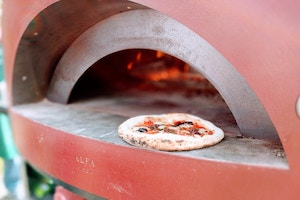

Pizza is fantastic!
The last time you had a cheeseburger was too long ago. Try not to drool when you think about the slightly charred, medium-rare meat nestled between soft brioche, cradled in crisp iceberg lettuce and flavour amplifying condiments. Why are you still reading this- go get a cheeseburger.
A Short History of Pizza
Think of cheeseburgers like a Tinder match. They might not all be your soulmate but you’ve gotta find out to be sure. It can get a little messy and that’s just part of the fun.
Some are cheesy, others can be a little dry, and the rare few are a disaster. There are so many cheeseburgers out there it can be hard to commit to just one favourite. That being said, when you know, you just know.
Everyone has their perfect match. Sometimes it’s just around the corner, other times you have to travel the world in search of it. Wherever your perfect cheeseburger is, it’s out there.